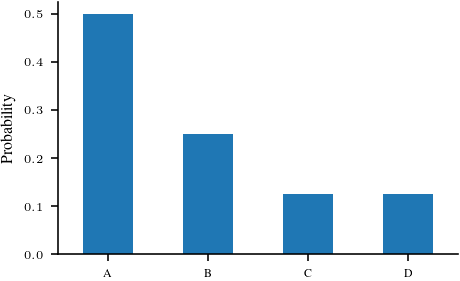
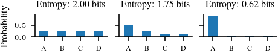

import torch
import numpy as np
import matplotlib.pyplot as plt
import pandas as pd
%matplotlib inline
# Retina display
%config InlineBackend.figure_format = 'retina'Closed form solution for prior predictive distribution
from tueplots import bundles
plt.rcParams.update(bundles.icml2022())
# Also add despine to the bundle using rcParams
plt.rcParams['axes.spines.right'] = False
plt.rcParams['axes.spines.top'] = False
# Increase font size to match Beamer template
plt.rcParams['font.size'] = 16
# Make background transparent
plt.rcParams['figure.facecolor'] = 'none'# Self information function
def self_information(p):
return -np.log2(p)
# Plot self information function from 0 to 1
x = np.linspace(0.0001, 1, 500)
y = self_information(x)
plt.plot(x, y)
plt.xlabel('Probability (p)')
plt.ylabel('Self information (bits)')
plt.savefig('figures/information-theory/self-information.pdf', bbox_inches='tight')
categorical_1 = torch.distributions.Categorical(probs = torch.tensor([0.25, 0.25, 0.25, 0.25]))
ser_1 = pd.Series(index=['A', 'B', 'C', 'D'], data=categorical_1.probs.detach().numpy())
ser_1.plot.bar(rot=0)
plt.ylabel('Probability')
plt.savefig('figures/information-theory/categorical-uniform.pdf', bbox_inches='tight')categorical_2 = torch.distributions.Categorical(probs = torch.tensor([0.5, 0.25, 0.125, 0.125]))
ser_2 = pd.Series(index=['A', 'B', 'C', 'D'], data=categorical_2.probs.detach().numpy())
ser_2.plot.bar(rot=0)
plt.ylabel('Probability')
plt.savefig('figures/information-theory/categorical-nonuniform.pdf', bbox_inches='tight')
# Entropy for a bernoulli distribution
def entropy_bernoulli(p):
return -(p * np.log2(p) + (1 - p) * np.log2(1 - p))
# Plot entropy for a bernoulli distribution
x = np.linspace(0.0001, 0.9999, 500)
y = entropy_bernoulli(x)
plt.plot(x, y)
plt.xlabel('Probability (p)')
plt.ylabel('Entropy (bits)')
plt.savefig('figures/information-theory/entropy-bernoulli.pdf', bbox_inches='tight')# Figure to take 3 categoriacl distributions on four symbols and title them with their entropy
# Make it two column figure for TUEplots
plt.rcParams.update(bundles.icml2022(nrows=1, ncols=3))
fig, axs = plt.subplots(1, 3, sharey=True)
ser_1.plot.bar(rot=0, ax=axs[0])
axs[0].set_ylabel('Probability')
axs[0].set_title('Entropy: {:.2f} bits'.format(categorical_1.entropy().item()/np.log(2))) # convert loge to log2
# Manually also calculate the entropy
p = categorical_1.probs.detach().numpy()
entropy = -(p * np.log2(p)).sum()
print(entropy)
ser_2.plot.bar(rot=0, ax=axs[1])
axs[1].set_title('Entropy: {:.2f} bits'.format(categorical_2.entropy().item()/np.log(2)))
categorical_3 = torch.distributions.Categorical(probs = torch.tensor([0.9, 0.05, 0.025, 0.025]))
ser_3 = pd.Series(index=['A', 'B', 'C', 'D'], data=categorical_3.probs.detach().numpy())
ser_3.plot.bar(rot=0, ax=axs[2])
axs[2].set_title('Entropy: {:.2f} bits'.format(categorical_3.entropy().item()/np.log(2)))
plt.savefig('figures/information-theory/categorical-entropy.pdf', bbox_inches='tight')2.0
p = {"A": 0.4, "B": 0.3, "C": 0.2, "D": 0.1}
q = {"A": 0.15, "B": 0.55, "C": 0.05, "D": 0.25}
def entropy(p):
return -(np.array(list(p.values())) * np.log2(np.array(list(p.values())))).sum()
def cross_entropy(p, q):
return -(np.array(list(p.values())) * np.log2(np.array(list(q.values())))).sum()
def kl_divergence(p, q):
return cross_entropy(p, q) - entropy(p)
print(entropy(p))
print(cross_entropy(p, q))
print(kl_divergence(p, q))1.8464393446710154
2.417920799518975
0.5714814548479596# Average length of a code
categorical_1.probstensor([0.2500, 0.2500, 0.2500, 0.2500])symbols = ['A', 'B', 'C', 'D']
probs = [0.25, 0.25, 0.25, 0.25]
codes = ['00', '01', '10', '11']
def average_length(probs, codes, symbols):
# Create a dictionary with the symbols and their probabilities
symbol_probs = dict(zip(symbols, probs))
# Create a dictionary with the symbols and their codes
symbol_codes = dict(zip(symbols, codes))
symbol_codes_length = {k: len(v) for k, v in symbol_codes.items()}
# Calculate the average length of a code
average_length_code = sum([symbol_probs[symbol] * symbol_codes_length[symbol] for symbol in symbols])
return average_length_codeaverage_length([0.25, 0.25, 0.25, 0.25], ['00', '01', '10', '11'], ['A', 'B', 'C', 'D'])2.0average_length([0.5, 0.25, 0.125, 0.125], ['00', '01', '10', '11'], ['A', 'B', 'C', 'D'])2.0import pygraphviz as pgv
from IPython.display import Image
# Heapq imports
import heapq
class Node:
def __init__(self, symbol, probability):
self.symbol = symbol
self.probability = probability
self.left = None
self.right = None
def __lt__(self, other):
return self.probability < other.probability
def huffman_encoding(symbols):
# Step 1: Calculate probabilities
probabilities = {}
total_symbols = len(symbols)
for symbol in symbols:
probabilities[symbol] = symbols.count(symbol) / total_symbols
# Step 2: Create initial nodes
nodes = [Node(symbol, probability) for symbol, probability in probabilities.items()]
# Step 3: Sort nodes
heapq.heapify(nodes)
# Step 4: Build Huffman tree
while len(nodes) > 1:
left = heapq.heappop(nodes)
right = heapq.heappop(nodes)
parent = Node(None, left.probability + right.probability)
parent.left = left
parent.right = right
heapq.heappush(nodes, parent)
root = nodes[0]
# Step 6: Assign binary codes
codes = {}
def assign_codes(node, code):
if node.symbol:
codes[node.symbol] = code
else:
assign_codes(node.left, code + '0')
assign_codes(node.right, code + '1')
assign_codes(root, '')
# Step 7: Convert dot format to graph
G = pgv.AGraph(tree_dot)
G.layout(prog='dot')
return codes, G
# Example usage
symbols = ['A', 'B', 'C', 'A', 'B', 'C', 'A', 'B', 'C']
codes, tree_dot = huffman_encoding(symbols)
print("Symbol\tCode")
for symbol, code in codes.items():
print(f"{symbol}\t{code}")
# Plotting the Huffman tree
tree_dot.draw('huffman_tree.png')ModuleNotFoundError: No module named 'pygraphviz'
sigma = 1.0
def prior_predictive(x, sigma, prior_mean, prior_cov):
"""Closed form prior predictive distribution for linear regression."""
prior_pred_mean = prior_mean[0] + prior_mean[1] * x
prior_pred_cov = sigma ** 2 + x ** 2 * prior_cov[1, 1]
return prior_pred_mean, prior_pred_cov